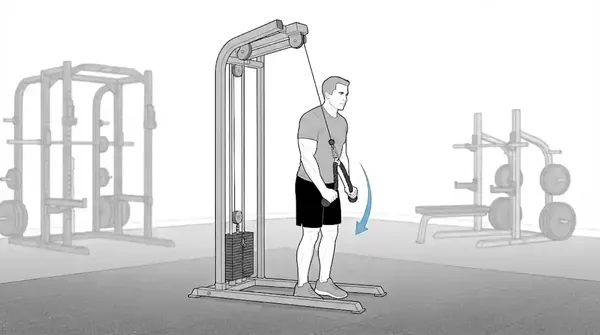

Bench press

Lie on the bench, feet flat on the floor, bar above your chest.
1. Slowly lower the bar until it lightly touches the middle of your chest.
2. Push the bar up until your arms are straight, without locking your elbows.
Variation: with dumbbells for a greater range of motion.
Tip: keep your back flat on the bench and use a spotter if the weight is heavy.
Dips

Support yourself on the parallel bars, arms straight, knees bent.
1. Lower yourself by bending your elbows until your arms form a 90° angle.
2. Push through your hands to come back up until your arms are straight.
Variation: with an assisted machine or a resistance band for beginners, or with added weight to progress.
Tip: keep your torso upright to target the triceps, lean forward to target the chest.
Cable flyes

Stand in the middle of the machine, one handle in each hand, one foot forward.
1. With your arms slightly bent, bring your hands together in front of your chest.
2. Slowly open your arms until you feel a stretch in your chest.
Variation: pulleys set high (lower chest) or low (upper chest).
Tip: keep the same elbow angle throughout the movement.
Rope triceps extension

Stand facing the high pulley, rope in hand, elbows tucked against your body.
1. Push the rope down until your arms are straight, spreading your hands at the end of the movement.
2. Slowly come back up until your forearms are at 90°.
Variation: with your back to the pulley, pull the rope forward over your head.
Tip: only your forearms move, your elbows stay still.